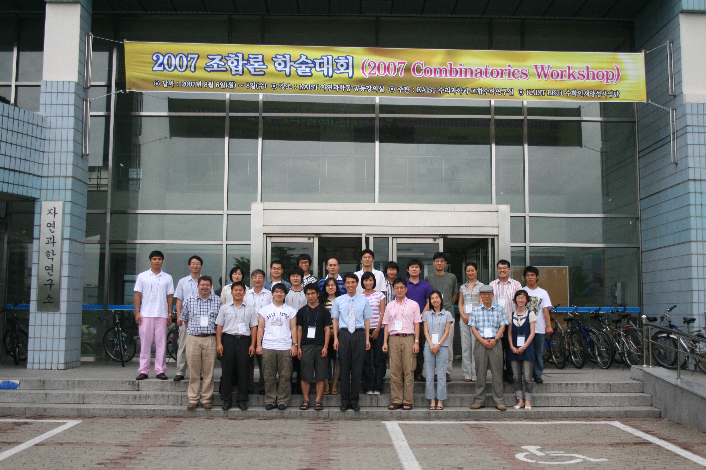

2007년 8월 6(월)-8일(수), KAIST 수리과학과
제목 / 2007 조합론 학술대회 (2007 Combinatorics Workshop)
주관 / KAIST 수리과학과 조합수학연구실
후원 / KAIST BK21 수학인재양성사업단
날짜 / 2007년 8월 6일(월) - 8일(수)
장소 / KAIST 자연과학동 공동강의실
중요한 날짜
2007년 7월 15일(일) 20일(금) / 발표 신청 마감 (Long
Abstract 제출 마감)
2007년 7월 17일(화) 20일(금) / 참가 신청 마감
2007년 7월 20일(금) 23일(월) / 숙박 단체 예약 및 공지
2007년 7월 30일(월) / 일정 확정 및 공지
2007년 8월 6일(월) / 조합론 학술대회 시작
등록비 / 없음 (교통비, 숙박비 및 식비 지원 없음)
연락처 / kaist2007@gmail.com, 042-869-2769 (KAIST 조합수학 연구실)
진행 (Staffs)
일정
시간 8월 6일(월) 8월 7일(화) 8월 8일(수) 좌장 연사 좌장 연사 좌장 연사 09:30 - 10:20 7A 세션
(권영수)7A-1 초청 강연
(권재훈)8A 세션
(노유미)8A-1 초청 강연
(남덕우)10:20 - 10:40 긴 휴식 긴 휴식 10:40 - 11:10 7A-2 강연
(주형관)8A-2 강연
(송익호)11:10 - 11:20 휴식 휴식 11:20 - 11:50 7A-3 강연
(Jack Koolen)8A-3 강연
(신희성)11:50 - 12:30 점심 12:30 - 13:00 등록 자유 토론 및 토의 13:00 - 13:30 개회 13:30 - 14:20 6A 세션
(서승현)6A-1 초청 강연
(엄상일)7B 세션
(Jack Koolen)7B-1 초청 강연
(엄상일)8B 세션
(권영수)8B-1 초청 강연
(엄상일)14:20 - 14:40 긴 휴식 긴 휴식 긴 휴식 14:40 - 15:30 6A-2 초청 강연
(곽진호)7B-2 초청 강연
(강순이)8B-2 강연
(서승현)15:30 - 15:50 긴 휴식 긴 휴식 긴 휴식 15:50 - 16:20 6A-3 강연
(권영수)7B-3 강연
(안지현)8B-3 강연
(사노 요시오)16:20 - 16:30 휴식 휴식 휴식 16:30 - 17:00 6A-4 강연
(김장수)7B-4 강연
(신희성)8B-4 강연
(김장수)17:00 - 17:30 광고 광고 폐회 17:30 - 20:00 숙소 배정 연회
상세 일정
8월 6일(월)
등록 / 12:30 - 13:00
개회 / 13:00 - 13:30
6A 세션 / 13:30 - 17:00
6A-1 초청 강연 / 13:30 - 14:20 / 엄상일 / Circle Graphs Obstructions under Pivoting
6A-2 초청 강연 / 14:40 - 15:30 / 곽진호 / Counting side-pairings of a polygon and Harer-Zagier Theorem
6A-3 강연 / 15:50 - 16:20 / 권영수 / Reflexibility of regular Cayley maps for abelian groups
6A-4 강연 / 16:30 - 17:00 / 김장수 / The largest power of 2 in the number of involutions
광고 / 17:00 - 17:30
8월 7일(화)
7A 세션 / 09:30 - 11:50
7A-1 초청 강연 / 09:30 - 10:20 / 권재훈 / Howe duality and Young tableaux
7A-2 강연 / 10:40 - 11:10 / 주형관 / On the enumeration of certain weighted graphs
7A-3 강연 / 11:20 - 11:50 / Jack Koolen / On a spectral characterization of the Hamming graphs
점심 / 11:50 - 12:30
자유 토론 및 토의 / 12:30 - 13:30
7B 세션 / 13:30 - 17:00
7B-1 초청 강연 / 13:30 - 14:20 / 엄상일 / Excluding a Bipartite Circle Graph from Line Graphs
7B-2 초청 강연 / 14:40 - 15:30 / 강순이 / On refinements of Ramanujan's partition congruence modulo 5
7B-3 강연 / 15:50 - 16:20 / 안지현 / Certain Ranked Posets of Length One and Continued Fraction
7B-4 강연 / 16:30 - 17:00 / 신희성 / On a decomposition of simple polytopes
광고 / 17:00 - 17:30
연회 / 17:30 - 20:00
8월 8일(수)
8A 세션 / 09:30 - 11:50
8A-1 초청 강연 / 09:30 - 10:20 / 남덕우 / Modeling and analyses for biological networks
8A-2 강연 / 10:40 - 11:10 / 송익호 / Polynomial representation for the number of partitions with length fixed
8A-3 강연 / 11:20 - 11:50 / 신희성 / Maple 소개 및 기초
점심 / 11:50 - 12:30
자유 토론 및 토의 / 12:30 - 13:30
8B 세션 / 13:30 - 17:00
8B-1 초청 강연 / 13:30 - 14:20 / 엄상일 / Rank-width and Well-quasi-ordering
8B-2 강연 / 14:40 - 15:30 / 서승현 / Threshold Arrangements
8B-3 강연 / 15:50 - 16:20 / 사노 요시오 / The greedy algorithm for strict cg-matroids
8B-4 강연 / 16:30 - 17:00 / 김장수 / 조합론에서의 Maple 활용
폐회 / 17:00 - 17:30
발표 시간
총 5개의 세션(session)을 계획하고 있으며, 모든 세션(session)에는 좌장(chairman)이 배정되며, 좌장이 시간을 통제한다.
하나의 세션은 한 개의 초청 강연(invited talk) 와 세 개의 강연(talk)으로 구성되어 있다.
초청 강연은 50분씩이고, 그 외의 강연은 30분씩이다.
매 강연 사이마다 휴식 시간이 있고, 이 시간에 발표자가 시간 내에 하지 못한 것을 다루거나, 질의응답 시간으로 활용할 수 있다.
발표 신청자가 많을 경우 세션을 늘리거나, 초록을 검토하여 발표자를 선별할 것이다.
시간이 더 필요한 발표자는 기타의견에 추가 시간을 요청하면, 일정을 확정할 때 반영한다.
제공
다과
연회 (Banquet) / 바이킹 뷔페 (8월 7일 저녁 6시, 대덕 컨벤션 타운 2층)
발표논문 초록집 (abstracts) 제공 <학술대회 회보(proceedings)는 따로 제작하지 않음>
학회 게시판 / 발표자는 게시판에 미리 발표자료(논문, 슬라이드 등)를 올려 참석자들과 공유
숙박 예약 / 유진호텔 (042-822-0131, 유성온천관광단지),
2인실 1박 기준 정상가 47000원 할인가 42000원
학회 참가 신청서에 숙박 예약을 신청하시면, 학회에서 단체로 예약
숙박을 이용하는 모든 분은 원칙적으로 본인이 숙박비를 부담
방을 혼자 사용하시는 경우에도 2인실 방을 예약함
방을 두 명이 같이 사용하려는 경우에는 대표로 1명만 예약하면 됨
학술대회 현장 사진 온라인 제공
KAIST 건물 내 무선 인터넷 서비스 제공
과학도서관(E9) Book Cafe 전산실 이용 가능
KAIST 캠퍼스 내 주차장 제공
초청 강연자에게는 소정의 강연료 지급
발표 및 참가 신청 / 아래의 참가 신청서를 기한까지 kaist2007@gmail.com 으로 제출
제목 / 2007 조합론 학술대회 참가 신청서
이름 / 홍길동
소속 / KAIST
직함 / <교수, 박사, 학생> 중 택일
핸드폰 / 01X-XXX-XXXX
이메일 / kaist2007@gmail.com
숙박예약 / <없음, 6-7일(1박), 7-8일(1박), 6-8일(2박)> 중 택일
참가형태 / <운영 위원, 초청 연사, 발표자, 참석자> 중 택일
-------- (초청 연사와 발표자는 아래의 내용 추가 작성) --------
발표방법 / <projector, OHP 및 white board> 중 택일
공동저자 / 김을동(XX대학교), 박철수(XX연구소), 홍길동(KAIST)
발표제목 / \title{ ......... (LaTeX source) .......... }
Long Abstract / \begin{abstract} ......... (LaTeX source) .......... \end{abstract}
(초록은 A4 한 장 분량 정도로 충분히 작성)
기타의견 / 발표를 선호하는 날짜를 적거나, 추가 시간을 요청.
목적 / 조합론 관련분야 연구자들이 한 자리에 모여 연구결과를 발표하고 관심 있는 문제들에 대해 토의하면서 서로 연구활동을 도와서 국내 조합론 분야 연구의 활성화에 기여한다.
분야 / 조합론 및 그 응용과 관련된 모든 분야. 조합론과 이산수학의 교육과 관련된 분야.
운영 위원 (Organizing Committee)
김동수 (KAIST 수리과학과) / dongsu.kim@kaist.ac.kr, 042-869-2729
박승경 (연세대학교 수학과) / sparky@yonsei.ac.kr, 02-2123-2597
서승현 (청주대학교 수학교육과)
이재운 (영남대학교 수학과) / julee@yu.ac.kr, 053-810-2311
초청 연사 (Invited Speaker)
강순이 (고등과학원) / On refinements of Ramanujan's partition congruence modulo 5
곽진호 (POSTECH) / Counting side-pairings of a polygon and Harer-Zagier Theorem
권재훈 (서울시립대학교) / Howe duality and Young tableaux
남덕우 (국가수리과학연구소) / Modeling and analyses for biological networks
엄상일 (University of Waterloo)
/ 1. Circle Graphs Obstructions under Pivoting
엄상일 (University of Waterloo) / 2. Excluding a
Bipartite Circle Graph from Line Graphs
엄상일 (University of Waterloo) / 3. Rank-width
and Well-quasi-ordering
연혁 / 조합론 학술대회는 2004년부터 매년 개최해 왔다. 2004년과 2005년에는 연세대학교에서, 2006년에는 영남대학교에서 개최되었다. 2007년에는 KAIST에서 개최될 예정이다.
2004 조합론
학술대회 (2004 Combinatorics Workshop) / 연세대학교 BK 연구팀
2004년 8월 16일(월)-17일(화) / 연세대학교 이과대학 수학과 과학관 225호
2005 조합수학
학술대회 (2005 Combinatorial Mathematics Conference) / 연세대학교 BK 연구팀
2005년 8월 8일(월)-10일(수) / 연세대학교 이과대학 수학과 과학관 225호
2006 조합론 학술대회
(2006 Combinatorics Workshop) / 영남대학교 이과대학 수학과
2006년 8월 9일(수)-10일(목) / 영남대학교 제1과학관 319호
2007 조합론 학술대회
(2007 Combinatorics Workshop) / KAIST 수리과학과 조합수학 연구실
2007년 8월 6일(월)-8일(수) / KAIST 자연과학동 공동강의실
학회 사진 (다운 받기)

|
이 문서는 더 이상 업데이트 되지 않습니다. |
Combinatorics Lab, Department of
Mathematical Sciences, KAIST, 335 Gwahangno, Yuseong-gu, Daejeon, 305-701,
Republic of Korea (South)
Copyright © 2007, Combinatorics Lab. All right reserved.
{kind=link}